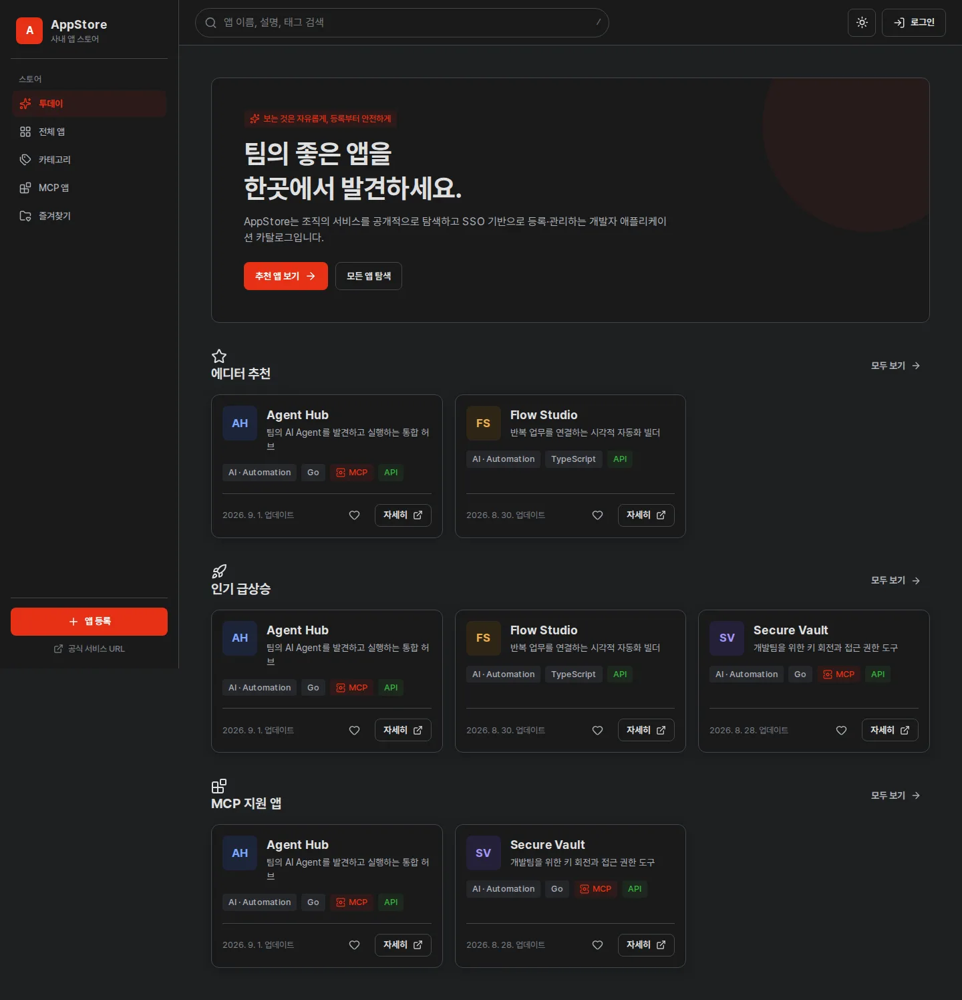
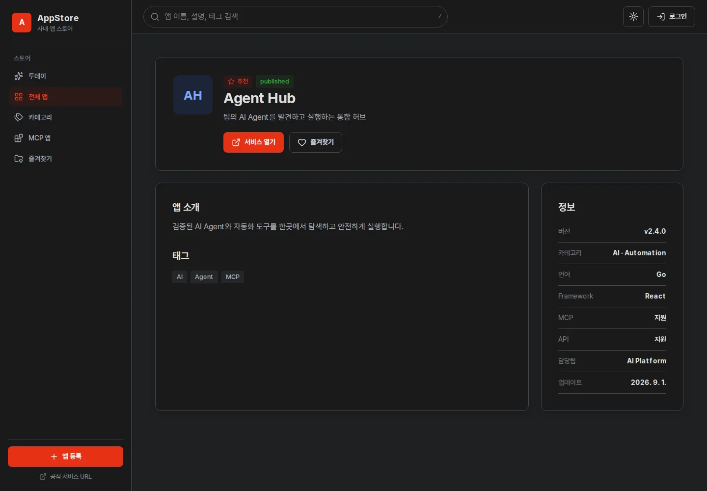
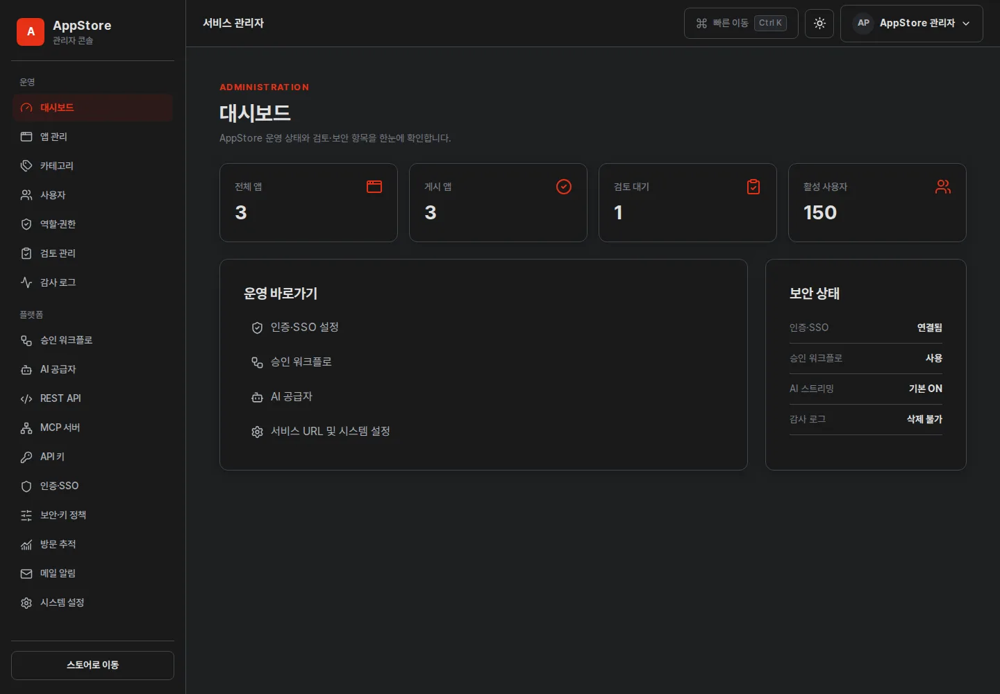
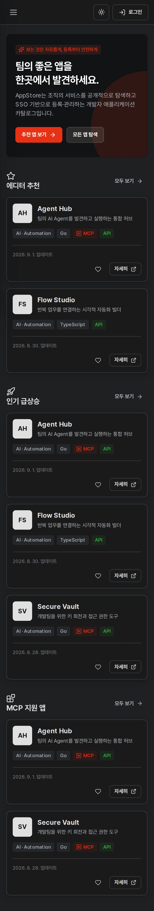

공개 앱 탐색
로그인 리디렉션 없이 앱, 카테고리, 검색, 상세와 서비스 URL을 바로 확인합니다.
AppStore는 사내 앱을 누구나 발견하고 실행할 수 있게 하면서, 등록·승인·Key·AI·API·MCP 관리는 SSO와 권한으로 분리하는 셀프서비스 플랫폼입니다.

일반 사용자, 등록자, Reviewer, 관리자의 업무 경계를 하나의 일관된 UI와 권한 모델로 제공합니다.
로그인 리디렉션 없이 앱, 카테고리, 검색, 상세와 서비스 URL을 바로 확인합니다.
Issuer, Client ID, Client Secret만 입력하면 discovery를 통해 endpoint를 구성하고 연결을 시험합니다.
기본은 즉시 게시입니다. 관리자가 켠 경우에만 팀장 검토, 승인, 반려와 재승인을 적용합니다.
원문을 한 번만 표시하고 해시로 보관합니다. 권한 템플릿, 만료, Grace Period와 폐기를 관리합니다.
같은 앱 카탈로그와 권한 체계를 사람, 자동화 도구와 AI Agent가 함께 사용합니다.
SSE를 기본으로 즉시 출력하고 취소를 백엔드까지 전파합니다. 모델별 최대 262,144 토큰을 관리합니다.
React SPA, REST API, OIDC, AI Streaming과 MCP를 하나의 non-root Go 이미지로 제공합니다.
appstore:v2.1.2, 반입 파일은 appstore-v2.1.2.tar.gz입니다. 이후 버전도 같은 vX.Y.Z 규칙을 따릅니다.모든 이미지는 v2.1.2 실제 React 화면을 Playwright의 비식별 fixture로 캡처한 WebP입니다. 이미지를 선택하면 잘리지 않은 전체 페이지를 확인할 수 있습니다.






AppStore는 사내 애플리케이션을 누구나 탐색하고, 인증된 사용자가 등록·관리하며, 선택적으로 검토·승인할 수 있는 오프라인 운영형 개발자 앱 카탈로그입니다.
가능합니다. GitHub Release의 appstore-v버전.tar.gz를 반입해 docker load로 설치하며, UI 자산과 데이터베이스 마이그레이션은 서비스 이미지에 포함됩니다. PostgreSQL과 선택적 Keycloak·AI 공급자는 폐쇄망 내부에서 별도로 제공해야 합니다.
아닙니다. 앱 탐색, 검색, 상세 확인은 비로그인으로 사용할 수 있습니다. 앱 등록, 개인화, API Key, 검토, 관리 기능을 이용할 때만 인증합니다.
아닙니다. 승인 워크플로의 기본값은 꺼짐이며 앱은 즉시 게시됩니다. 관리자가 활성화한 경우에만 팀장 또는 Reviewer의 승인·반려 절차가 적용됩니다.
애플리케이션은 POSTGRES_DSN, BOOTSTRAP_ADMIN, BOOTSTRAP_ADMIN_PASSWORD, ENCRYPTION_KEY 네 가지 환경변수만 읽습니다. OIDC, AI, API, MCP, 워크플로와 서비스 URL은 관리자 화면에서 설정합니다.
{kind=link}
{kind=link}
{kind=link}